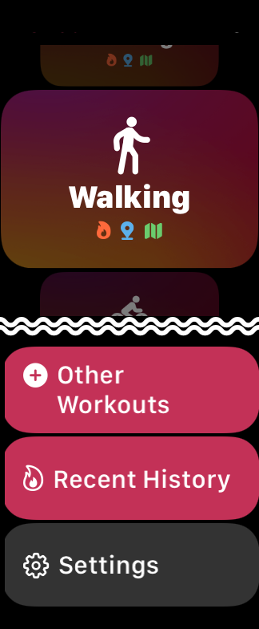

Help
Settings of Apple Watch App
When you scroll down the top screen, there is a "Settings" button.
Zone Notifications

When the heart rate zone changes, it will inform you with notification sound and Haptic feedback.
If you do not want to be notified, turn off the switch.
Auto Pause

It pause and resumes automatically.
For example, in the case of Running, if you stop, it will pause, and if you start moving again, it will resume.
When auto pause is ON, the pause button is not displayed on measurement.
This function is effective only when you select the following activities.
- Running
- Downhill Skiing *1
- Snowboarding *1
- Cycling (excluding indoors) *2
Press to Pause
Pause or resume your workout by pressing the side button and Digital Crown at the same time.
For exercises where you might accidentally press the button, such as push-ups, turn the switch to OFF.
* Required watchOS 8.0, Zones 5.0 or later
Key Metric
You can change the item that is displayed most prominently on the screen during workout measurement. Select either "Heart Rate" or "Exercise Intensity".
* Required watchOS 8.0, Zones 5.0 or later

Other Settings
Heart rate zones, units, and custom workouts are set in the iPhone app.
iPhone app settings are automatically reflected in Apple Watch.
If the latest settings are not reflected, put iPhone and Apple Watch in a state that they can communicate and tap "Sync Now".
If the iPhone app is not installed, the "Sync Now" button is not displayed.